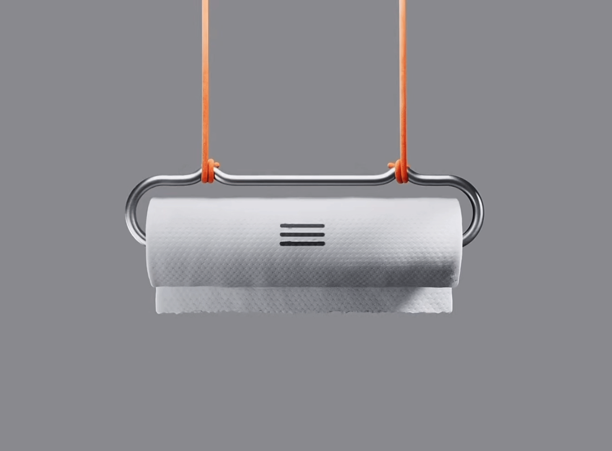
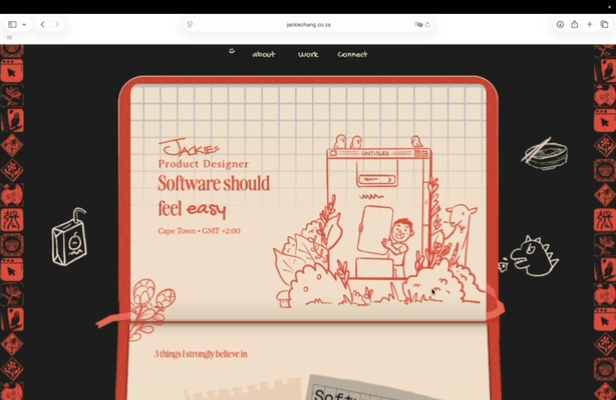
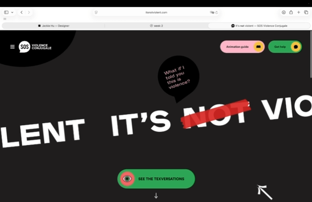
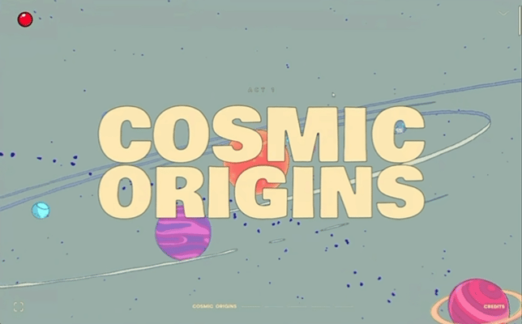
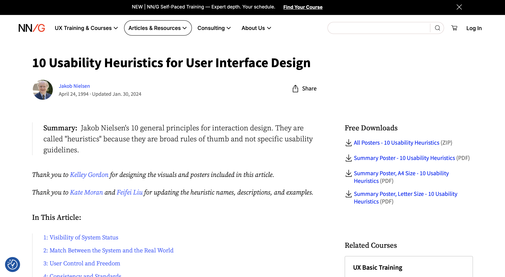
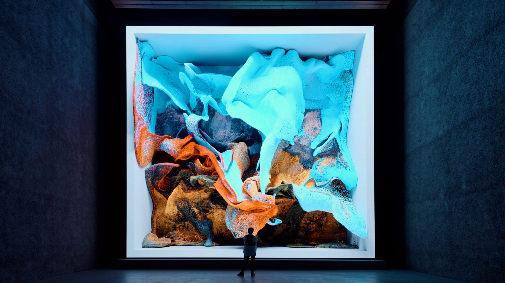
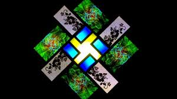
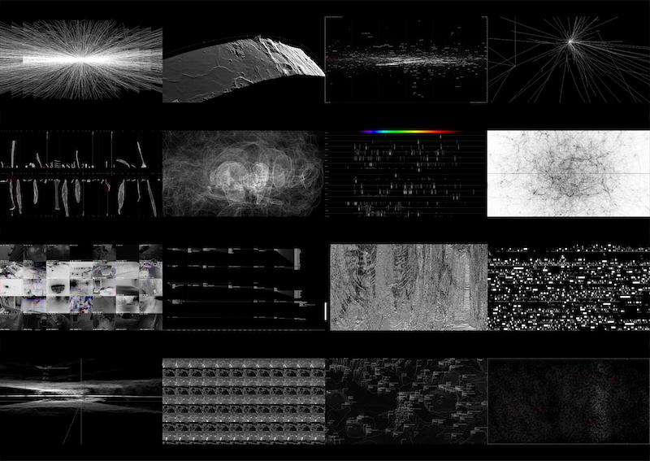
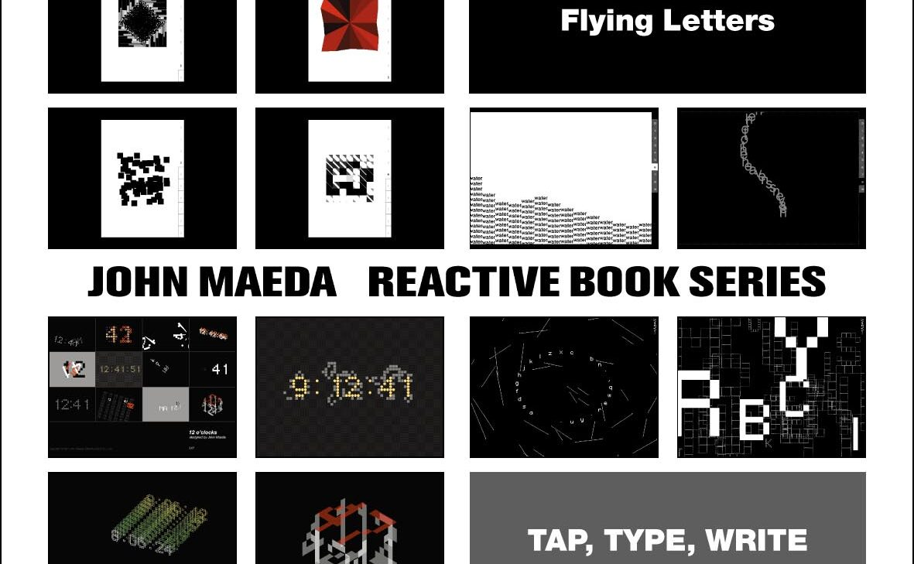

---🤖 Paper Menu Design 🤖--- Viocu Apostol

Viocu Apostol’s paper menu design reminds me to think outside traditional interactive design. It shows interaction goes beyond screens, inspiring me to combine digital and physical experiences.
Click to Visit site!
---🕵️♀️ Interactive Design 🕵️♀️--- Jackie Zhang

This is a South African designer’s portfolio styled as a notebook. Artworks spill out from the pages with sticky note labels, making its unconventional design highly interactive.
Click to Visit site!
-----👽 itsnotviolent.com 👽----- SOS Violence Conjugale

This is a website for a Canadian organization that helps domestic violence victims. It uses interactive elements to educate users about abuse, making the experience more engaging and impactful.
Click to Visit site!
---🌟 Monolith Project 🌟--- Nando Correa

The Monolith Project, inspired by 2001: A Space Odyssey, offers an immersive cosmic journey through scroll-based interactive art. It perfectly aligns with my theme of the universe and consciousness, turning abstract ideas of awakening into an engaging experience. This work made me realize how breaking cognitive boundaries relates to self-awakening and how immersive visuals strengthen grand philosophical ideas.
Click to Visit site!
--👾 WebDesign Heuristics 👾-- Jakob Nielsen

Jakob Nielsen is a renowned usability expert who has contributed significantly to web design principles, which helped me understand the importance of usability heuristics.
Click to Visit site!
---🌟 Machine Hallucinations 🌟--- Refik Anadol

Refik Anadol is a media artist whose work explores AI, machine learning, memory, and immersive digital environments. His project Nature Dreams uses over 300 million nature photographs and GAN technology to create dreamlike AI-generated landscapes that feel realistic but do not exist in reality. The work made me reflect on how AI systems, similar to ChatGPT, can learn from massive datasets and develop their own visual language and creative logic. The immersive visuals and atmospheric sounds created a strong emotional tension between calmness and the powerful energy of nature. Inspired by Anadol’s practice, my final project also explores generative motion, sensory interaction, and the visualisation of invisible systems through digital aesthetics.
Click to Visit site!
---🌟 77 Million Paintings 🌟--- Brian Eno

Brian Eno is a musician and visual artist known for developing Generative Art through systems that combine sound, image, and algorithms. His work 77 Million Paintings uses 296 painted slides and programmed algorithms to create constantly changing audiovisual compositions that never repeat in the same way. The project explores ideas of randomness, transformation, time, and immersive experience, and was even used in hospitals to help reduce patient anxiety through calming sensory environments. Inspired by this work, I used real-time heartbeat data in my Arduino installation to generate unique visual and earthquake-like effects that continuously change based on live human signals.
Click to Visit site!
-------🌟 Data-Verse 🌟------- Ryoji Ikeda

Ryoji Ikeda is an electronic composer and visual artist whose work transforms invisible data, mathematical systems, and sound into immersive audiovisual experiences. His installation data-verse particularly inspired my workbook design through its use of projection mapping, monochrome visuals, sound frequencies, and algorithmic sequencing to create the feeling of travelling through a digital universe. Inspired by Ikeda’s approach, my own projects explore how hidden systems such as planetary structures and heartbeat data can be transformed into immersive visual, physical, and sensory interactions.
Click to Visit site!
----🌟 Reactive Books 🌟---- John Maeda

John Maeda is a designer and computer scientist known for exploring the relationship between computation, interaction, and traditional books through projects like Reactive Books. His experimental approach to interaction design inspired my workbook and p5.js coding experiments, helping me realise that websites can contain emotional, playful, and unexpected behaviours beyond simple clicking or hovering. After studying his work, I became more confident in experimenting with creative coding, interactive animations, cursor effects, and immersive digital interactions instead of limiting my ideas because of technical difficulty.
Click to Visit site!